|
||||||||||||||||||||
|
11 juin 2013 - Bye Bye Hawaii Pour la quatrième fois, Philippe nous a rejoint. Cette fois, il veut s'attaquer à une traversée digne de ce nom: 2600 nm et 55°N. Grâce à lui, nos quarts seront plus courts et plus espacés, on va mieux dormir. Et si l'un d'entre nous est malade, il en reste encore 2 pour assurer. Question sécurité, c'est certainement un plus !
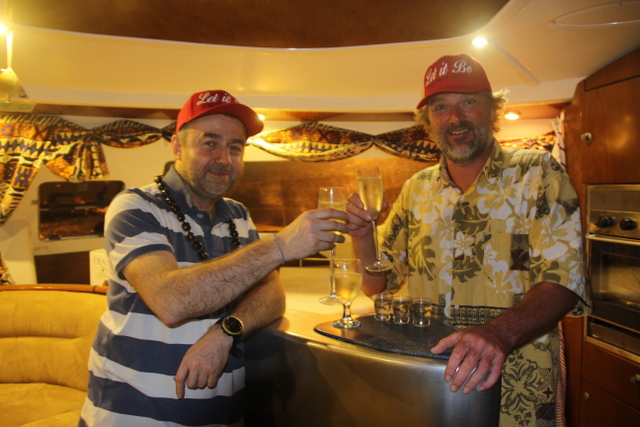 Philippe nous a une fois de plus rejoint Le chantier frigorifique a trouvé une fin provisoire puisque le nouvel évaporateur, une fois chargé en gaz par les bons soins de Mark, fonctionne à merveille. Toutefois, n'ayant pas trouvé de thermostat pour congélateur, nous ne pouvons que l'utiliser comme frigo. Mais, au moins, cela double notre capacité froid, ce qui permet d'envisager les 20 jours de traversée avec quelque sérénité au niveau de l'avitaillement.
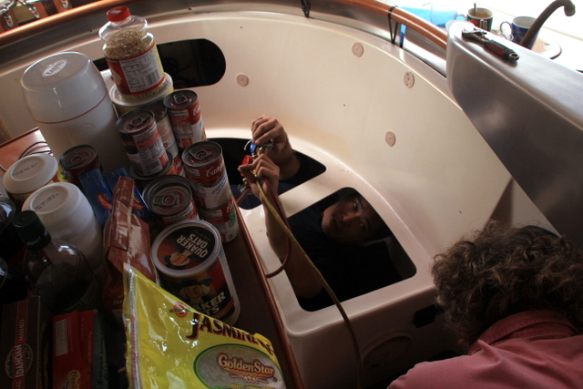 Mark le frigoriste est aussi contorsionniste Quant au reste, tout se déroule comme prévu: le bateau est propre et plein. Les douanes nous ont laissé partir et, heureux hasard, nous ont même informés que nous pouvions quand même recevoir une nouvelle licence de voyage lorsque nous remettrons les voiles dans leur beau pays. Nous ne sommes plus à l'index. Je suppose que c'est leur manière de nous donner une leçon pour avoir perdu notre premier document. Décidément, je ne me ferai jamais à la nature moralisatrice de l'autorité. Comme si j'avais besoin d'eux pour discerner le bien du mal...
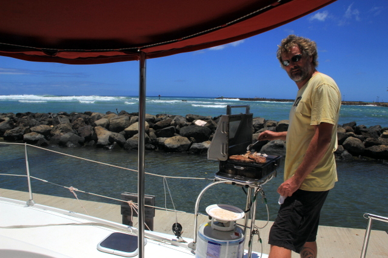 Dernier BBQ face aux surfeurs de Waikiki Nous quittons Hawaii avec un sentiment mitigé. C'est certes un archipel magnifique mais c'est aussi un grand parc d'attraction à l'américaine, sans âme, et qu'il n'est pas aisé de visiter en voilier. On se tourne maintenant vers l'avenir et le Canada... Changement de culture, changement de climat et nouveauté pour nous. Les 20 jours de mer risquent d'être un peu difficiles mais n'est-ce pas là aussi ce qui fait le plaisir de voyager? |
||||||||||||||||||||
|
3 juin 2013 - Faire le plein Comme à l'accoutumée, les journées qui précèdent une grande traversée sont fort occupées. Après avoir cousu des lanières de fermeture sur le lazy bag, revissé le rail sur le mât, remis une couche de peinture antidérapante dans le cockpit, fixé des chaumards (taquets en inox) sur les étraves pour la pantoire, démonté l'évaporateur du congélateur, remplacé le ventilateur de carré, réussi à fourguer des tonnes de vieux vêtements et fait 18 aller-retour, à pied, jusqu'au super marché le plus proche pour avitailler le bateau (2 km A/R - 100L de boisson à dos d'homme, entre autres choses), nous avions décidé de nous attaquer au gros morceau: faire le plein de diesel.
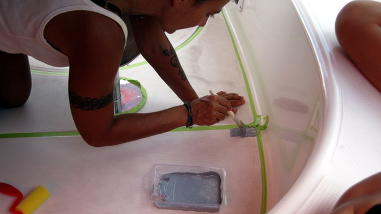 Cécile attaque la (re)peinture du cockpit Normalement, faire le plein consiste à aller à la pompe, tirer le tuyau dans le bateau, mettre l'extremité dans le trou du réservoir et déclencher la pompe. Faire le plein, quoi. Ici, c'est un peu différent: pour avoir 400L de diesel, il nous a fallu 24h, et cela nous a coûté 670$... 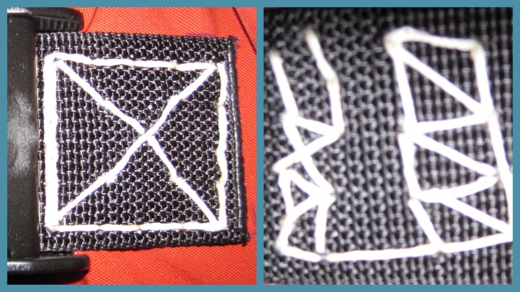 A gauche la couture de Cécile, à droite celle d'Eric (même la photo est ratée) Plan B: aller à la pompe et remplir des jerrycans. Nous en avons 7 disponibles, chacun contenant 20L. Pour 400L, c'est 3 allers-retours. Encore faut-il les transporter... A pied? Peu probable. Il faut louer une voiture. Etape 1, vers 11h: trouver une voiture de location. Vers 14h, pour 50$, la voiture était au quai en face du nôtre. Eh oui, malheureusement, notre quai n'est pas accessible en voiture. En clair, à vol d'oiseau, la voiture est à 100m du bateau mais à pied, c'est presqu'un kilomètre. Etape 2: mettre les jerrycans dans l'annexe et rejoindre le quai en face. Problème: les pontons qui permettent aux occupants de monter ou descendre de leur navire sont fermés par une porte métallique. Si on y accoste, on ne peut pas rejoindre le quai. Il faut s'arrêter le long du quai, entre deux bateaux, où le sol est situé 1m au-dessus du niveau de l'eau et en pente. Pas facile pour décharger et encore moins pour charger les jerrycans remplis au retour. Etape 3: trouver une station service qui vend du diesel. Eh oui, aux US, le diesel est réservé aux camions et une station sur 5 est équipée. Résultat, on tourne en rond dans la ville, personne n'ayant la moindre idée de l'endroit où l'on vend le produit miracle. Etape 4: on finit par trouver. On prépaie, ce qui nous permet d'entretenir notre niveau en arithmétique: 7 jerrycans de 5,3 gallons à 4.69$/gal, ça fait combien? Etape 5: on retourne au quai, on transvase les 7 jerrycans du coffre à l'annexe, on rejoint le bateau et on verse le contenu de chaque jerrycan via un entonoir dans le réservoir. Etape 6 et 7: cf étape 4 et 5. Il est 18h, le temps de préparer le repas et de passer une bonne nuit réparatrice. Etape 8: vers 8h du matin, on s'apprète à reproduire le schéma pour la troisième et dernière fois. On arrive au quai d'en face avec nos jerrycans pour découvrir qu'on nous a volé la voiture. Pas glop. Nous retrouvons le voleur: il s'agit de Ace Towing Company. Notre voiture a été enlevée et emmenée à la fourrière. Pourtant, nous étions stationnés juste en dessous du panneau qui disait: 'Parking réservé aux utilisateurs du port'. Un peu énervé, je fais remarquer au personnel de la marina que nous étions semble-t-il dans notre droit, étant des utilisateurs assidus - et payants - des installations portuaires. 'Bien sûr', nous affirme le capitaine du port, 'mais il faut un macaron...'. A ce moment, malgré mon envie vicérale de tordre le coup du monsieur, je préfère passer à l'étape suivante. Etape 9: prendre un taxi pour la fourrière. Comme il n'y a pas de raison de se gêner quand on a tous les droits, la fourrière est située à l'autre bout de la ville, soit 35$ de course en taxi. Les frais d'enlèvement s'élèvent à 175$, payables uniquement en cash, ce qui nous oblige à passer par un distributeur. Etape 10: revenir dare-dare avec la voiture pour la rendre avant 11h sous peine de payer un deuxième jour de location. Etape 11: refaire les étapes 4 et 5, puis rendre la voiture. Et voilà comment on perd 24h et 670$ pour obtenir 400L de fuel... Dans un prochain billet, je vous expliquerai pourquoi réparer un bateau européen aux US est un calvaire. Par exemple, leur système impérial fait qu'aucun boulon d'ici n'est compatible avec les nôtres. En outre, si vous voulez préforer avec précision, ce qui est une bonne chose quand vous faites des trous pour boulonner dans les coques, vous devez acheter de nouveaux forets. Et là, surprise !! Si j'ai des boulons d'1/4 de pouce, quel foret utiliser? hein? 7/32ème ou 15/64ème? Et 3/16ème c'est plus que 11/64ème ou moins?
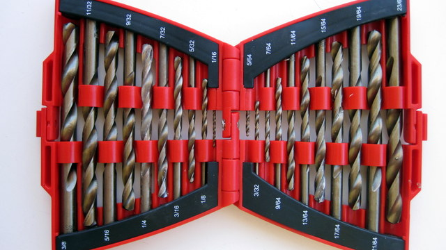 Mes nouveaux forets. Les tailles sont indiquées en blanc...Pourquoi faire simple quand on peut faire compliqué? Si vous voulez vous faire une idée de notre vie ici, essayez d'imaginer que vous vivez à 5, sans voiture, à 1 km du supermarché, que votre congélateur est mort, que la route la plus proche est à 300m et que vous retapez votre maison à 10 km du magasin d'outillage. Vivement qu'on retrouve les mouillages forains !! |
||||||||||||||||||||
|
1 juin 2013 - 20.000 miles sur les mers Je triche un peu, nous n'en sommes qu'à 19.925. Mais comme nous serons en pleine traversée vers le Canada pour franchir ce seuil mythique, je préfère le célébrer dès maintenant. Vingt milles lieues sous les mers, comme le capitaine Nemo, mais au-dessus... Incroyable! Je me rappelle encore comment je me la jouais quand nous avions franchi les premiers 10.000 miles... Aaaaah ces jeunes qui croient qu'ils savent tout sous prétexte qu'ils ont navigué 10.000 miles. Laissez-moi rire. Non, nous, les vrais marins, nous restons humbles. Humbles face à la mer, humbles face aux douanes. C'est ça, la vie de vrai marin.
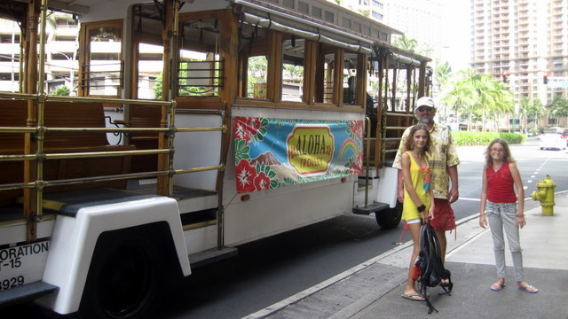 Une compagnie de bus privée, spécialement adaptée aux touristes japonais A ce sujet, nous découvrons chaque jour les moeurs du coin. Par exemple, juste en face de nous, se situe le Hawaii Yacht Club où je me suis rendu pour essayer de glâner quelques renseignements. Une fois sur place, j'ai demandé s'il était possible de boire un verre au bar. La madame, voyant que je n'étais pas membre, me demanda si j'étais membre d'un yacht club, là-bas, d'où je venais. Je lui dis que je ne venais pas de là-bas et que je faisais de la voile dans le Pacifique sans avoir de port d'attache particulier. C'est ce que nous faisons tous, m'a répondu la dame avec candeur. J'ai mesuré à cet instant l'infranchissable espace qui nous sépare des sympathiques membres de ce Yacht Club. Certes, ils maitrisent les manoeuvres de pont, mieux que nous d'ailleurs, mais c'est à peu près la seule chose que nous ayons en commun, quoi qu'ils en pensent. En fait, le Yacht Club est une organisation qui regroupe les voileux du week end, qui se retrouvent pour boire un verre après avoir disputé leur régate dans la baie. La plupart n'ont jamais été en haute mer mais nombreux sont ceux que nous avons croisés qui allaient bientôt partir, c'est sûr... Bref, n'étant membre d'aucun Yacht Club, je ne pouvais pas boire une bière au bar de celui-ci....
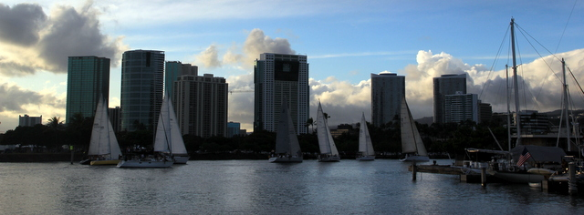 Rentrée des régatiers du Vendredi Insensible à cet enième exemple du sectarisme ambiant, Cécile s'est mise en quête d'un frigoriste, en partie aussi du fait de mon incapacité à en trouver. J'ai eu beau donner moulte coups de téléphone et laisser de nombreux messages, je n'ai jamais réussi à obtenir ne fut-ce qu'une réponse. Personne ne voulait venir sur Let It Be. Pourtant je ne demandais pas grand'chose: juste une recharge de R134a (le gaz réfrigérant) et un détecteur de fuite. Eh bien croyez-le ou non, mais Cécile a trouvé un frigoriste en moins de 5 minutes et elle a même réussi à le faire venir dans la journée. Je me demande de quels charmes subtils elle peut bien disposer pour arriver si facilement à ses fins...
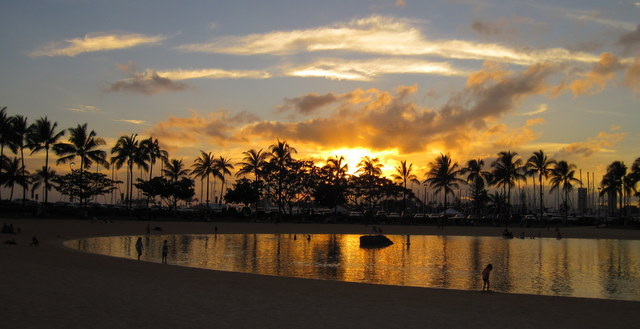 Coucher de soleil sur le lagon artificiel du Hilton Monsieur Frigo ayant confirmé mon hypothèse selon laquelle l'évaporateur fuyait, nous sommes partis, Cécile et moi, marcher sur la plage et boire un cocktail au bar du Hilton. Il faut dire que nous célébrions le 16ème anniversaire de notre rencontre, événement important s'il en est.
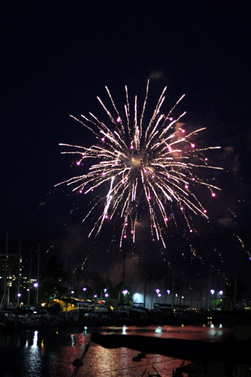 Feu d'artifice pour nos 16 ans de rencontre C'est bien simple, ému de tant d'amour et de romantisme, le Hilton a décidé de tirer un feu d'artifice sur la plage en notre honneur. Comme il le fait tous les vendredis (on le savait depuis vendredi dernier, on était prêt, l'appareil photo en main). C'est curieux d'ailleurs, chaque feu d'artifice coûte 40.000$ paraît-il. Quand on voit le nombre de clochards qui dorment dans les parcs, on se dit que cet argent pourrait être mieux dépensé... |
||||||||||||||||||||
|
22 mai 2013 - Waikiki Beach Quand j'étais jeune, j'étais un rebelle. J'ai toujours eu des rapports conflictuels avec les autorités, quelles qu'elles fussent. A cette époque, nombreux étaient ceux qui me prédisaient un avenir difficile... Je réalise maintenant à quel point ils avaient raison. Cependant, il aura fallu attendre 46 ans et toute la clairvoyance des douanes américaines pour enfin me démasquer.
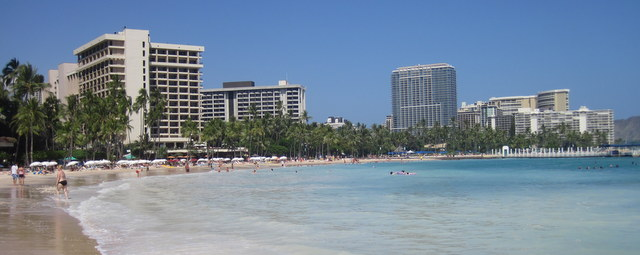 Honolulu by day Eh oui, cette fois ça y est: j'ai été pris en flagrant délit: j'ai oublié d'appeler les douanes à Molokai. Enfin, pas vraiment, j'ai appelé les douanes de Hilo, notre port d'entrée, plutot que celles de Molokai... Et pour cette violation flagrante des lois américaines, les douanes ont confisqué les papiers du bateau en me menaçant d'une amende de 5.000 $ et d'un an de prison !!! Quand je pense que c'est moi qui les avais contacté pour obtenir un dupplicata de mon permis de croisière égaré et que je me suis rendu plein de confiance à leur rendez-vous qui était en fait un traquenard! J'ai cru que c'était une blague mais non. On ne plaisante pas avec la sécurité des USA... Pour un coup de téléphone mal placé, me voilà sur la liste noire. Cela pourrait prêter à rire si cela n'affectait pas sérieusement notre voyage puisque, dorénavant, nous ne pouvons plus voyager 'librement' aux US. Dans un climat qui risque d'être délétère, étant donnée la suspicion dont nous ferons l'objet à chaque arrivée, il nous faut désormais faire les formalités d'entrée et de sortie chaque fois qu'on change de port, ce qui va rendre notre vie de voyageurs particulièrement pénible.
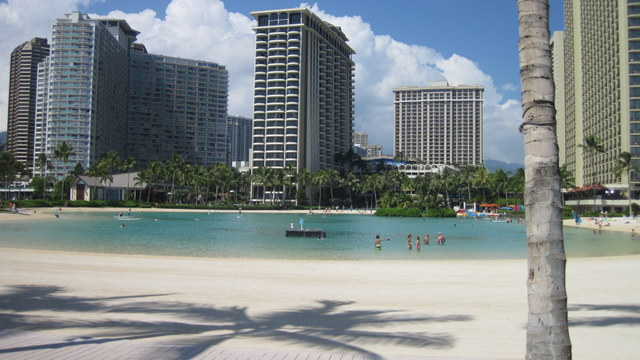 Le lagon artificiel du Hilton Enfin, il n'y a rien à faire: les douanes refusent de nous écouter, tout en nous menaçant des pires ennuis en cas de contestation ou de non respect de leurs directives. Ils refusent même de nous expliquer ce qui motive leur décision, à part ce coup de téléphone oublié. Le pays de la liberté est un état de droit, paraît-il... Il ne nous reste qu'une option: éviter à l'avenir de venir en bateau dans ce pays de névrosés paranoïaques, ce qui pose quelques problèmes puisque nous allons au Canada.
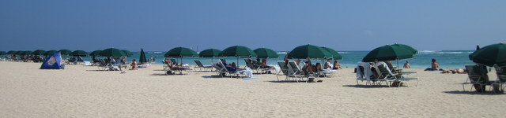 Waikiki Beach Heureusement, notre nouvel emplacement dans la marina nous offre une vue magnifique sur la ville, tant de jour que de nuit. Nous sommes à 500m de Waikiki Beach et les surfeurs s'ébrouent dans les vagues à 100m de notre bateau.
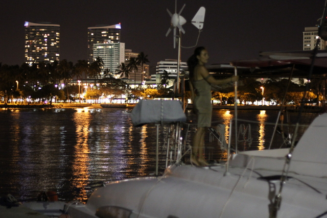 Honolulu by night Il y a même un lagon artificiel au pied du Hilton, dans lequel on peut patauger. C'est d'ailleurs ce que les enfants ont fait une bonne partie de l'après-midi pendant que je buvais une bière bien fraîche en regardant les rouleaux mourir à mes pieds. Et chaque matin, nous nous réveillons avec le soleil, sous un ciel tout bleu. Sans les règles stupides du pays de la liberté, ce serait le paradis !! |
||||||||||||||||||||
|
19 mai 2013 - Honolulu Qui, parmi les plus de 40 ans, ne connaît pas Magnum? Pas le cornet de glace, hein, le moustachu sympa qui roulait en Ferrari... Mais si, rappelez-vous... Un feuilleton des années 80 avec un détective hors pair qui attrapait les méchants tout en gérant un vieillard de plus de 40 ans avec deux chiens méchants et qui avait un copain black qui pilotait des hélicoptères... Vous voyez? Eh bien, nous y sommes: à Honolulu !!! Oui, oui...
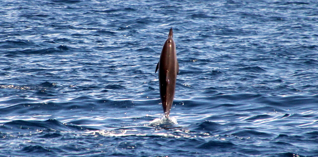 Les dauphins espiègles saluent notre départ Comme à l'accoutumée, avant de partir, j'avais pris la météo. Rien à signaler, à part un 'high surf warning'. Sur le moment, j'ai pas fait attention, surtout que je ne voyais pas bien ce que ça voulait dire... Maintenant, je sais. Ca veut dire: houle du sud et vagues géantes qui déferlent sur les plages... Sans rire, nous n'avions jamais vu ça: des rouleaux de 3m de diamètre qui déferlent sur les côtes. C'est simple: on est entré dans la marina à 15 noeuds, en surfant sur une vague de folie. Je n'ai jamais eu aussi peur aux commandes de Let It Be.
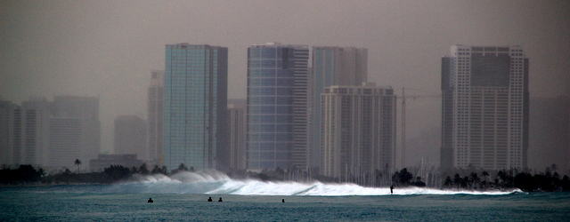 A l'approche d'Honolulu, les vagues déferlent... Une fois dans la marina, les problèmes typiquement américains ont commencé (mais nous devenons flegmatiques). Comme c'était un dimanche, personne ne répondait à la VHF. Comme il n'y a pas de 'courtesy berth', on a tourné en rond dans la marina pendant 15 minutes, avant d'apponter sur un quai en béton qui semblait abandonné. Une fois bien amarrés, nous avons réalisé que le bout de quai que nous occupions était fermé par une barrière surmontée de barbelés !!! Eh oui, une fois de plus, nous étions en prison... Apparemment, nous occupons l'ancienne station service.
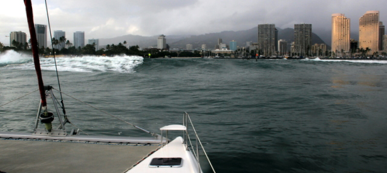 Rentrée dans la marina à plus de 15 noeuds Pour aller voir le capitaine du port, nous avons attendu lundi matin avant de mettre l'annexe à l'eau. Une fois sur place, nous avons essayé d'obtenir une place de port mais sans succès: d'une part, nous n'avons pas pu mettre la main sur notre 'cruising permit', ce qui nous a valu des ennuis dantesques que je vous relaterai sous peu, d'autre part, nous n'avons pas passé l'inspection. Eh oui, aux US, le pays de la liberté, il faut passer une inspection pour pouvoir trouver asile dans une marina. A la capitainerie, ils nous ont donné les informations: l'inspection consiste à valider que vous êtes bien en adéquation avec les règles de sécurité: extincteurs modèle B1, fusées de détresse (on est dans une marina...), harnais de sécurité (y a de la houle dehors, mais quand même), corne de brume audible à 800m pendant 6s (si, si, on ne rigole pas avec le brouillard à Honolulu, même s'ils ne savent pas ce que c'est), poubelle en matériau durable (?) et, évidemment, réservoirs à caca. En outre, nous sommes supposés disposer d'un exemplaire papier des 'American Navigation Rules', de bonnes voiles (sic!), d'une motorisation adéquate et, bien entendu, d'un gouvernail approprié. Ne rigolez pas, tout cela est écrit noir sur blanc sur leur questionnaire... Ensuite, on vous demande de faire un petit tour au moteur dans le port, pour voir si votre bateau est manoeuvrable, probablement au cas où vous seriez arrivés ici par hasard... Et comme c'est Noël, on vous demande 15$ pour cette grotesquerie. Si un jour je deviens président à vie d'un pays tropical, je me ferai un plaisir d'établir des règles débiles pour les visiteurs américains... pour leur sécurité, bien sûr... |
||||||||||||||||||||
|
16 mai 2013 - On ne bouge pas Ca faisait un moment que cela ne nous était plus arrivé: on est coincé dans notre mouillage. Quand on s'est faufilé à travers la barrière, il n'y avait pas de vent. Mais depuis une semaine, on a entre 20 et 30 noeuds. Alors, pas possible de partir, non seulement on ne voit pas bien la faille dans le corail mais le vent latéral risquerait de nous emporter...
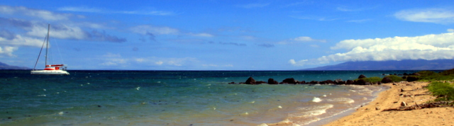 Let It Be, bien à l'abri Bref, on ne bouge pas. Le récif nous protège des vagues mais nous sommes directement exposés au vent, ce qui nous fatigue à la longue, essentiellement à cause du bruit que fait le gréement ballotté par les courants d'air. Hélas, tout revers a sa médaille, et inversement. Les éoliennes tournent comme des derviches et l'électricité abonde. En outre, il y a un petit magasin à moins de 500m du rivage. On pourrait rester ici des années, si on voulait... |
||||||||||||||||||||
|
11 mai 2013 - Molokai la sauvage L'obstination paie: nous sommes revenus sur les lieux de notre déconvenue d'hier et, cette fois, les nuages s'étaient évaporés. On a eu droit à notre look out sur Kalaupapa, la colonie de lépreux où vécut le père Damien.
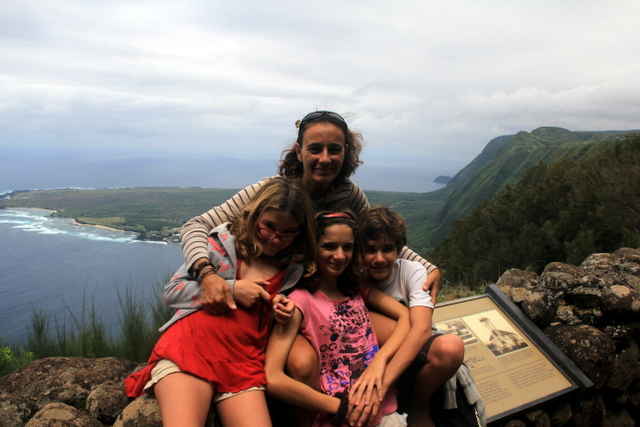 Cécile devant Kalaupapa La formation de ce plateau au pied des falaises est due à une éruption tardive et très locale, survenue après l'érosion des grandes murailles volcaniques issues d'une vaste éruption très antérieure. Le petit bout de terre presque plat dispose de son propre petit cratère personnel.
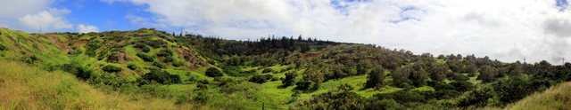 Paysage au centre de l'île Cécile vous parle... Molokai offre un réseau routier sommaire que l'on peut parcourir en quelques heures. L'ouest de l'île fut l'objet d'un projet de développement touristique important, du fait de sa proximité avec Oahu, l'île voisine surpeuplée. L'idée était de construire un grand port, de mettre en place une ligne de ferry entre les îles et d'agrandir ainsi la banlieue d'Honolulu. En plus, cela permettrait aux grands paquebots de visiter Molokai et d'y déverser des centaines de touristes pleins de sesterces.
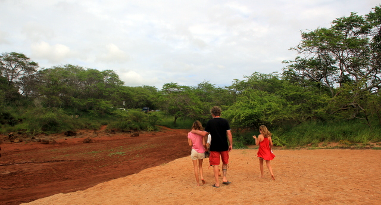 La plage de sable rouge Une petite ville s'est même développée, avec ses bars, restaurants et même ses salles de cinéma. Les propriétés de bord de mer se sont vendues des sommes folles et tout était parfait. Sauf que les locaux ont vu ce que le tourisme a fait de Maui à l'est. Ils ont vu ce que l'économie a fait d'Oahu à l'ouest (avec Honolulu, la ville la plus embouteillée des US). Ils ont dit: "Non". A force d'actions répétées, ils ont dégoûté les investisseurs qui se sont tournés vers d'autres projets moins controversés.
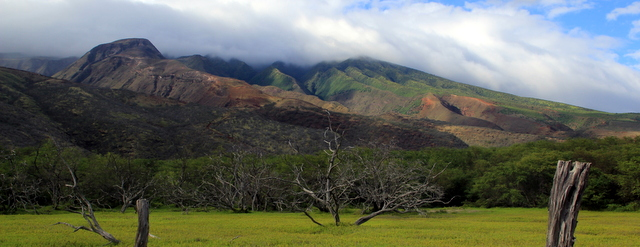 Le marécage Résultat: pas de port, pas de paquebots et pas de touristes. La petite ville à l'ouest est maintenant déserte, un peu comme dans les westerns, et Molokai garde son caractère sauvage qui nous plaît beaucoup. |
||||||||||||||||||||
|
10 mai 2013 - Le père Damien était dans les nuages Le père Damien est arrivé à Molokai en 1873. A l'époque, une colonie de lépreux (sur)vivait sur un petit plateau au nord de l'île, au pied des falaises. Ils étaient 'logés' à cet endroit parce qu'il est impossible de s'en échapper, coincé entre les falaises verticales et la mer. Mr De Veuster (c'est Damien) resta 16 ans sur ce petit bout de terre avant de succomber à son tour, victime d'une maladie dont on ne savait pas grand'chose à l'époque.
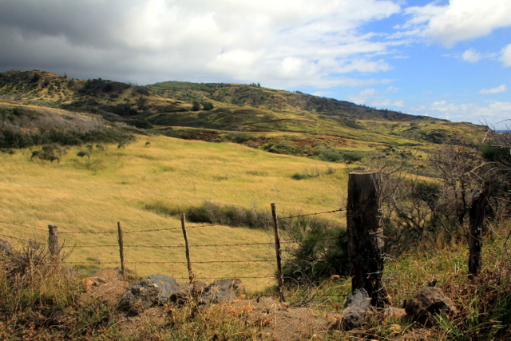 Il y a la campagne Aujourd'hui, la lèpre se soigne parfaitement et ses victimes ne sont plus contagieuses (elle ne l'ont pas vraiment été, la lèpre étant l'une des maladies transmissibles les moins contagieuses). Il n'y a donc plus de raison d'isoler la colonie du reste du monde mais il demeure quelques malades qui ont choisi de finir leurs jours là et dont il faut respecter l'intimité. Mais cela n'a pas entamé nos élans d'explorateurs...
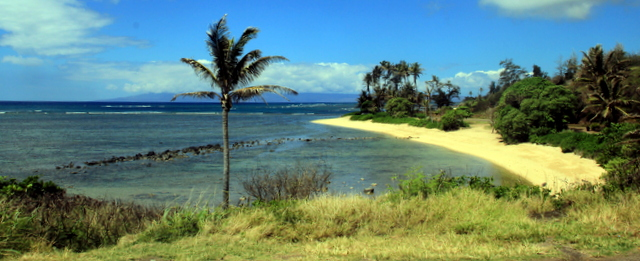 Il y a la mer Ayant loué une voiture, nous avions décidé d'explorer méthodiquement toutes les routes asphaltées de l'île, soit près de 40km de voies carrossables. A l'est, nous avons abouti à la plage... Au sud, nous étions sur Let It Be et au Nord, nous avons rencontré les nuages. Reste l'ouest, pour demain...
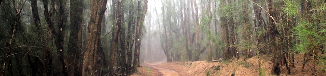 Il y a la forêt Normalement, on aurait dû se rendre au sommet des falaises que nous avions admirées d'en bas en bateau, afin d'avoir une vue d'ensemble... Hélas, en ce beau vendredi de mai, de gros nuages venus du nord se sont heurtés aux crêtes, ne laissant que brumes et embruns dans les hauteurs. Bref, on n'a rien pu voir d'en haut... Néanmoins, on peut déjà affirmer que Molokai est sauvage, peu peuplée et naturelle. C'est la première île de l'archipel qui nous semble un rien 'polynésienne' contrairement à Maui la Touriste et Big Island l'Américaine. Ici, les gens sont sympas, seule une propriété sur deux est décorée de 'No Trespassing', 'Beware of dogs', 'Private property' et 'Keep out' (en plus des barrières, évidemment). C'est encourageant ! |
||||||||||||||||||||
|
7 mai 2013 - Molokai, face Nord En 2011, nous avions visité le sud de la Nlle Zélande. Ses paysages somptueux ont servi de décor au film "Le Seigneur des Anneaux". Aujourd'hui, nous avons longé la côte nord de Molokai, où furent tournées les premières scènes de "Jurassic Park".
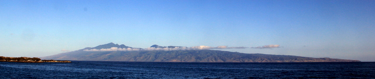 Molokai, ce matin à 8h Partis dès potron minet, nous avons profité de nos 110CV et de l'absence totale de vent pour contourner Molokai par le nord. La côte est d'ordinaire fouettée par les embruns et la houle venue de loin, ce qui la rend difficile d'accès par bateau.
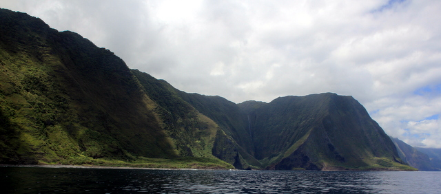 La côte nord est verticale Aujourd'hui, c'était le calme plat et nous avons longé les falaises de plus de 700m. N'étaient les hélicoptères qui se succèdent un peu trop fréquemment à mon goût, on se croirait dans "King Kong": on progresse lentement au bruit sourd des moteurs, écrasés par 700 m d'à pic verdoyant lézardé par des chutes d'eau cataractesques. Le spectacle est vraiment à couper le souffle.
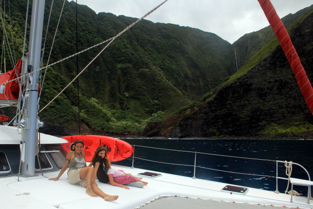 Kenya et Chouchou devant la chute d'eau de la mort On a fait un aller-retour le long de la côte, en s'approchant le plus près possible du rivage. Nous avons dû rebrousser chemin et trouver un abri au sud de l'île car il n'est pas raisonnable de chercher mouillage au pied des falaises. En fait, après la visite au nord, nous avons longé la côte sud qui présente la particularité d'être protégée par un récif corallien impénétrable, à l'image de Rarotonga.
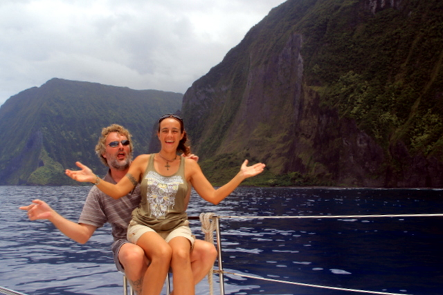 On n'en revient pas Mais il en faut plus pour nous arrêter: nous avons en effet trouvé une faille dans la barrière et rejoint LE mouillage tranquille et gratuit de l'archipel d'Hawaii. Si vous regardez la photo ci-dessous, vous pourrez voir où nous sommes et vous constaterez que le corail n'a pas toujours été la préoccupation principale de l'état: on mouille dans une piscine dynamitée au coeur même du récif... Quoi qu'il en soit, c'est très beau et très calme.
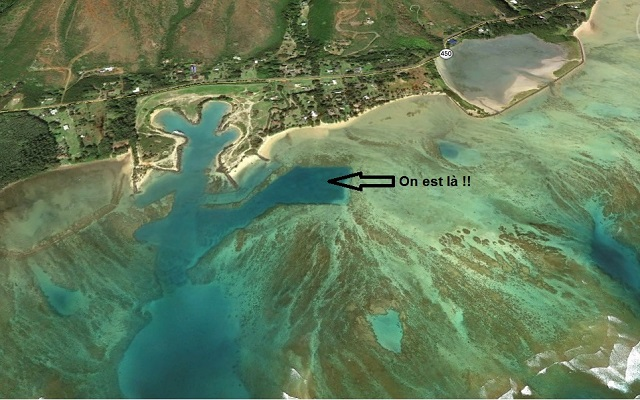 On est dans notre petit trou |
||||||||||||||||||||
|
6 mai 2013 - Maui en moto Maui, comme Big Island, présente une grande disparité entre la côte au vent (à l'est) et celle sous le vent (à l'ouest, pour ceux qui doutent). La côte protégée, où nous mouillons comme tous les autres bateaux, est relativement aride tandis qu'à l'opposé, l'exubérance végétale est de mise.
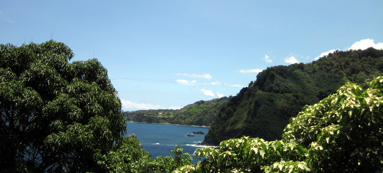 La côte Nord est magnifique En ce beau samedi, nous avons pu valider cette assertion grâce à la moto que nous a prêtée Yves, voiliste que nous avions rencontré à Atuona (Marquises) en novembre dernier. Nous avons parcouru près de 200 km sur les routes de Maui, tantôt larges et rectilignes, tantôt ombragées et sinueuses.
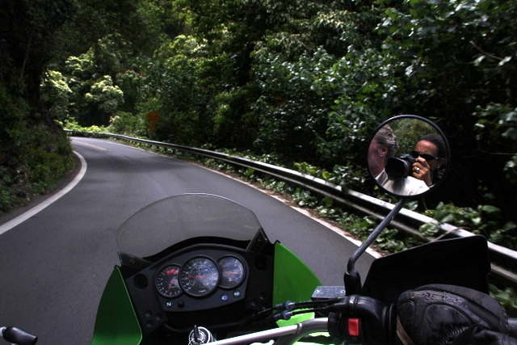 Cécile mitraille même en pleine chevauchée Maui est nettement plus touristique que Big Island et Lahaina, sa capitale, en face de laquelle nous avons pris une bouée, est remplie de visiteurs. C'est bien simple, nous avons eu toutes les peines du monde à trouver un supermarché... puisque les habitants n'y habitent pas et n'y font pas la cuisine. Par contre, les rues sont flanquées d'un nombre impressionnant de boutiques, bars et restaurants.
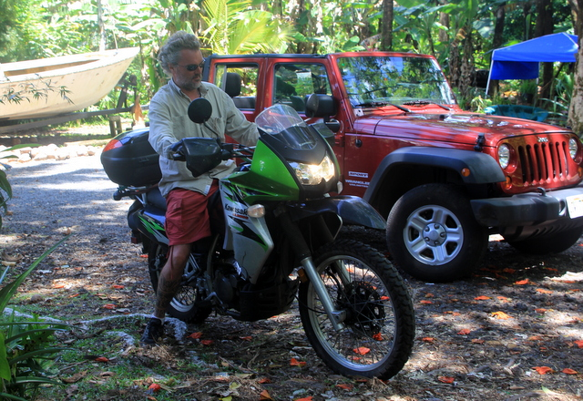 Remarquez la coupe de cheveux. C'est ce qui arrive quand on n'a pas de casque... Comme d'habitude, dès notre arrivée, nous avons pu mesurer la différence de mentalité entre américains et européens. En effet, à peine avions-nous pris la bouée que nous sommes descendus à terre pour prévenir le yacht club. La seule question qu'ils nous ont posée fut: "Vous avez une assurance en responsabilité civile?". "Euh, oui", a répondu Cécile, croyant bon d'ajouter: "C'est pourquoi? Au cas où notre amarre se rompt, on finira au pire sur le récif. Vous avez peur qu'on casse le corail?". Notre interlocutrice a pouffé en nous regardant comme si l'on venait d'une autre planète: "Evidemment !!". Ben tiens, on pourrait casser le corail avec notre bateau en plastique. En attendant, on a quand même passé une heure avec le capitaine du port, qui voulait notre lettre de pavillon, nos passeports, notre permis de croisière et nos papiers d'entrée, pour nous facturer ensuite 4$ par jour, le tout dans un climat de suspicion tangible. On se sent les bienvenus chaque fois qu'on a affaire à l'état.
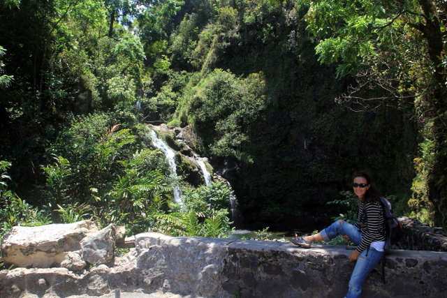 Cécile devant LA cascade Renseignements pris (car on se demandait quand même à quoi pouvait servir une assurance 'contre le corail'), on nous a affirmé que l'état d'Hawaii était très concerné par la préservation de son corail. De très lourdes amendes sont prévues pour les contrevenants. Bon sang, mais c'est bien sûr ! Voici le scenario catastrophe: on brise notre mouillage secrètement pendant la nuit, on finit sur le récif et notre bateau explose sur le corail. Heureusement, on parvient à s'en sortir et l'état nous poursuit alors pour cassage volontaire de corail et notre assurance paie l'amende (en pratique, l'assurance applique l'alinéa 2 de l'article 17bis des conditions particulières qui précise que s'agissant d'une amende, la compagnie n'intervient pas).
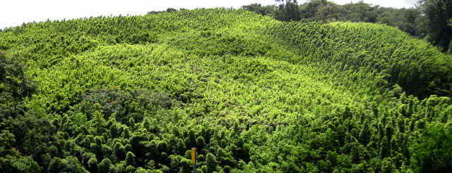 Forêt de bambou On s'est quand même demandé quel genre d'assurance monstrueuse devaient avoir les autres embarcations... Par exemple, les petits sous-marins remplis de touristes qui survolent le corail en permanence avec leurs gros moteurs polluants, ou les catamarans qui emmènent les amateurs de barbotage sur le corail et qui y jettent l'ancre, ou encore les bateaux qui emmènent les plongeurs par dizaines et qui vont, eux aussi, jeter l'ancre sur le corail, sans compter les énormes paquebots qui se succèdent chaque jour, déversant plus de 1000 passagers sur terre au terme d'un va et vient incessant de petites chaloupes motorisées. Non, c'est sûr, l'état d'Hawaii veille sur son corail...
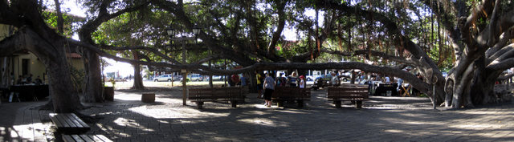 Incroyable: un ficus de 100m de diamètre avec 20 troncs N'empêche, voilà un moyen de remplir les caisses de l'état en Polynésie: ils n'ont qu'à racketter les voiliers qui s'échouent sur le corail. Avec les Tuamotus, ça va être le jack-pot !!! Dernier détail: ici, le port du casque à moto n'est pas obligatoire. Par contre, les lunettes solaires doivent être sur votre nez en permanence. C'est la loi. |
||||||||||||||||||||
|
2 mai 2013 - Danse avec les tortues Après la baie d'Hilo, ses eaux froides et son environnement urbain, nous voici à Makano, sur Maui, sur l'ancre et sur 7m de sable. Enfin un mouillage gratuit à Hawaii (car figurez-vous que l'état d'Hawaii nous extorquait $400 par mois pour jeter l'ancre à Reeds Bay sans offrir aucun service d'aucune sorte, pas même un dock pour le dinghy, moyennant quoi, nous avions juste le droit de la fermer...).
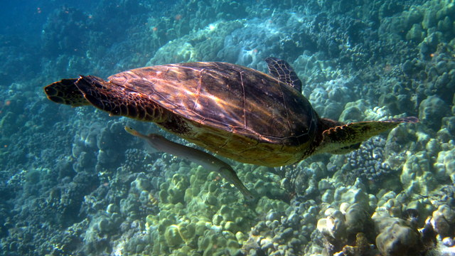 Tortue volante En plus, on retrouve nos marques: sable fin, corail et poissons multicolores. Ce retour à la normale nous enchante vraiment, d'autant que nous avons trouvé par hasard un endroit fort agréable et fort joli et... fort fréquenté. Lorsque nous sommes arrivés, en fin de journée, l'endroit était désert. Le lendemain matin, c'était le carnaval de Binche, les Gilles en moins. Heureusement, les bateaux qui jettent l'ancre à côté du nôtre pour déverser les snorkeleurs par centaines ont un emploi du temps très précis: ils arrivent tous à 9h du matin et repartent tous à 10h... Les touristes américains n'ont pas beaucoup de temps pour leur vacances et tout est bien planifié.
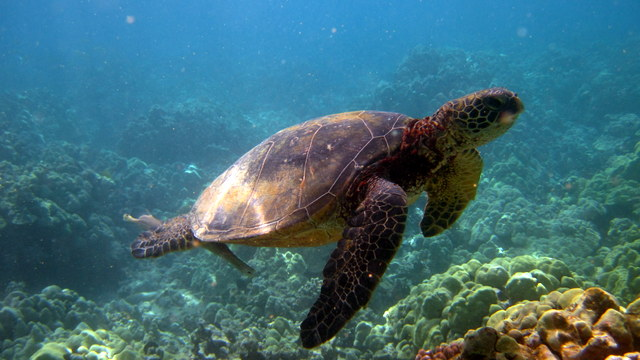 Tortue plongeuse Après 10h, nous avons l'entièreté du mouillage pour nous tous seuls. Dès la fin de l'école, Cécile peut à son tour aller visiter le corail, pendant que Sidney joue avec l'iPad et que je frotte les coques. Au cours de sa dernière plongée, Cécile est tombée nez à nez avec une tortue peu farouche. En général, ces animaux à carapace fuient comme des torpilles à la vue de la première nageuse venue, fut-elle séduisante et bien galbée comme Cécile. Dans ce cas, la tortue était fort curieuse, refusant même de quitter Cécile lorsque celle-ci voulut rejoindre le bateau.
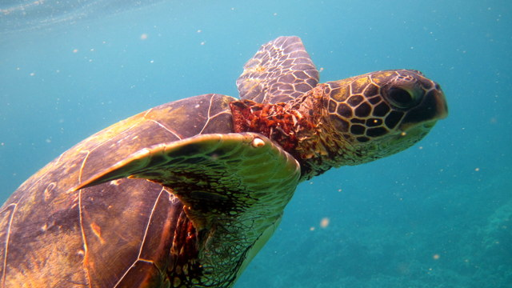 Tortue joueuse Vers 16h, alors que nous ne faisions rien, le vent s'est levé au NW, exactement du large... En moins d'un quart d'heure, le mouillage est devenu intenable. Nous avons levé l'ancre avec une facilité déconcertante afin de trouver refuge dans une baie mieux protégée. En chemin, nous avons vu une baleine sauter hors de l'eau au loin. Incroyable. Ces animaux énormes arrivent à s'élever en chandelle hors de l'eau, presque jusqu'à la queue. La scène fut trop fugace pour être immortalisée sur la pellicule. Dommage.
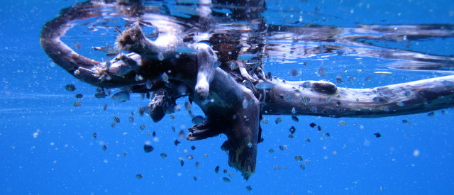 Souche flottante par Cécile Arrivés dans la baie, notre confort était tel que nous avons dormi comme des loirs. Hélas, le lendemain, nous avons découvert le bateau recouvert de traces noirâtres et collantes. "Caramba", me suis-je dit, "encore un coup du gouvernement local pour nous dégoûter de ces îles magnifiques". Mais non. C'était simplement le résultat de l'écobuage des champs de cannes à sucre au vent de Let It Be. |
||||||||||||||||||||
|
29 avril 2013 - Bye Bye Big Island Maintenant que nous sommes grands propriétaires terriens et que nous avons reçu l'ensemble des cours des enfants, nous pouvons continuer notre périple. Ce matin, dès 6h, nous avons mis les voiles en direction de Maui, située à 140nm à l'ouest de Big Island.
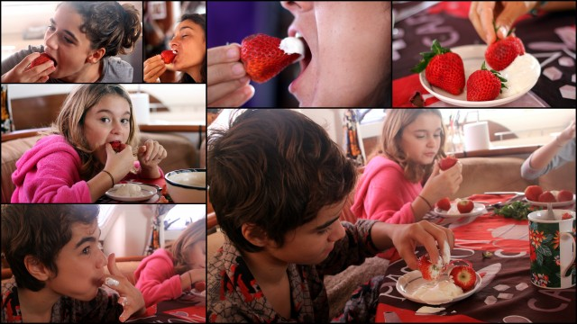 Orgie de fraises avant de partir A peine franchissions-nous le brise-lame qui protège le port d'Hilo que nous avons croisé Mauricio et Paola, partis la veille pour les Marquises, et revenus dès aujourd'hui, après avoir tiré des bords carrés pendant 24h... Les bords carrés, c'est quand on essaie de remonter le vent et qu'on n'y arrive pas. Je leur avais dit: on attend du bon vent pour partir (et donc, comme nous partons exactement du côté opposé à eux, si c'est bon pour nous, c'est pas bon pour eux). Pauvre Mauricio, je suis sûr qu'il remettra ça dans quelques jours avec du vent meilleur!
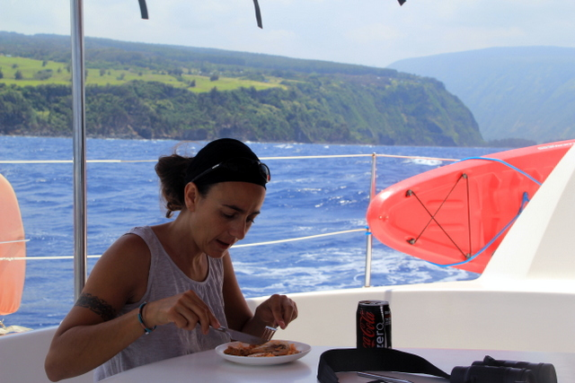 Repas plus frugal en navigation En attendant, le vent fut bon pour nous et nous avons gentiment longé la côte nord de Big Island, avant de trouver un petit mouillage un rien chahuté pour la nuit. Dès le lendemain, nous avons traversé le chenal qui sépare Big Island de Maui et dont on ne nous avait dit que du mal: "Des vagues énormes... un courant de folie ... des pirates sanguinaires ... des vents diluviens... etc". Bref, on était sur nos gardes.
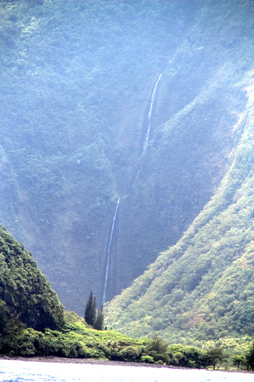 La côte nord de Big Island est falaisoïdale Mais Monsieur Météo avait raison: en ce lundi, pas le moindre souffle d'air sur l'archipel. Nous avons fait de la voile au moteur, à la grande joie de Sidney, avant de mouiller dans une baie aux eaux claires dans laquelle nous avons directement plongé malgré la température franchement polaire de l'eau: 26°C. Notre résistance physique fut mise à rude épreuve, surtout que nous avions oublié d'enfiler nos maillots, mais nous avons quand même tous les 4 nagé jusqu'à l'ancre. Pourquoi 4? Parce que Sidney, ce pleutre, préférait jouer à l'iPad plutôt que de regarder le magnifique corail du cru (bien vivant, ce corail, d'ailleurs). Il faut dire qu'il était on-line avec Mathilde, sa nouvelle petite amie virtuelle... Enfin, dont il ne connaît que l'avatar sur Clash of Clans... |
||||||||||||||||||||
|
22 avril 2013 - Tour du propriétaire 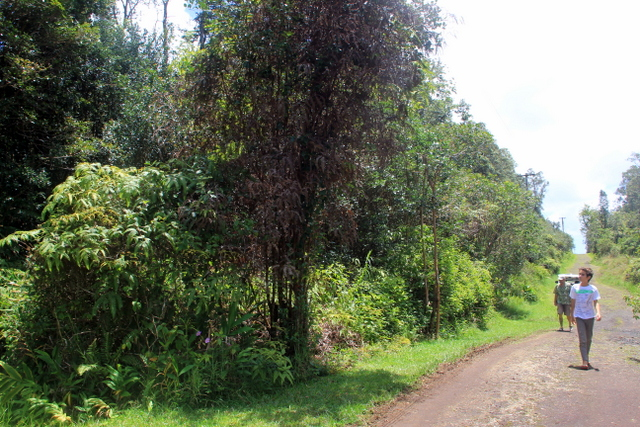 La route qui mène à notre propriété Cette fois, c'est fait. Nous avons acheté un lopin de terre sur les pentes du Kilauea. Situé à 300m d'altitude, à une dizaine de km de la plage et à 30 minutes de la ville, notre magnifique propriété s'étend sur 1,6 hectares, tout en longueur. Il s'agit d'un petit bois, situé dans un 'lotissement' aménagé pour l'habitat et jouissant, à ce titre, de l'électricité publique et de voies carrossables (pour autant qu'on dispose d'un 4x4). Pour l'instant, nous n'avons pas de voisins directs, c'est donc très calme.
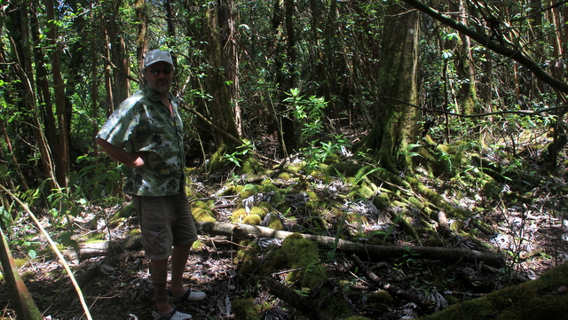 Les sous-bois du haut A Hawaii, il fait entre 20 et 25°C toute l'année, et ici, il pleut régulièrement, de sorte que tout pousse. Enfin, tout pourrait pousser, si l'on prenait soin de débroussailler un peu. C'est bien connu, les pentes des volcans sont très fertiles et parfois très chaudes aussi. Bien sûr, l'endroit nécessite quelques aménagements pour être viable.
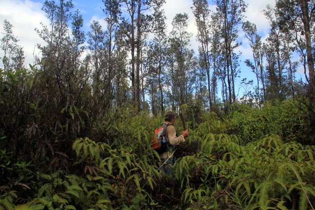 Les broussailles du bas Avant d'acquérir ce bien, nous avions décidé de le parcourir, histoire de vérifier l'absence de vice caché, genre carcasses de voiture, dépôt d'immondices clandestin, champ de marijuana secret ou temple rituel pour secte satanique. L'entreprise consistait à se rendre sur place, muni d'une machette et d'un GPS afin de faire le tour du propriétaire. Il faut préciser qu'il n'y a pas de clôture et que le bois est non entretenu. Autant dire qu'après 50m, vous n'avez plus la moindre idée d'où vous êtes, ni même si vous vous trouvez encore sur votre lot.
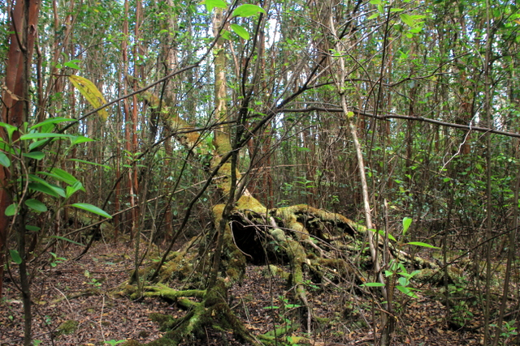 Les souches du milieu Il nous a fallu pas moins de 90 minutes pour traverser le terrain qui s'étend sur 400m, avec une déclivité moyenne de 1.6% (c'est plat quoi). Au début, les arbres hauts empêchent la végétation basse de se développer et la marche est relativement aisée. Vers la moitié de la propriété, les arbres se font rares et le règne de la brousaille commence, en particulier les fougères et les orchidées sauvages. La marche devient franchement acrobatique.
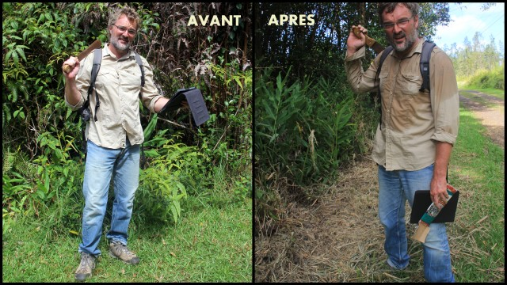 Pas facile à traverser, ce terrain en friche Certains nous imaginent déjà en train de vivre ici, des fruits de notre jardin et des danses lascives de Cécile. Hélas, je me dois de les détromper: nous n'avons pas le droit de nous installer ici. Ah, ah, me direz-vous... Mais pourquoi, dès lors, avez-vous acheté ce terrain? Eh bien, parce que tel était notre bon plaisir. Si vous avez d'autres questions, consultez le rendement des placements financiers et venez voir comme c'est beau, ici...
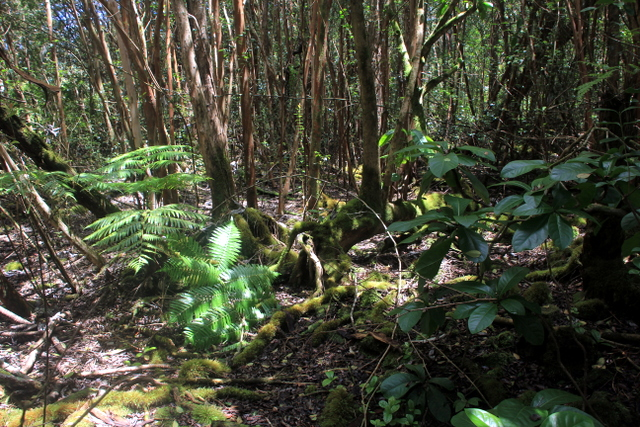 La forêt enchantée Pour la petite histoire, sachez que pour acheter une bière aux US, il faut montrer son passeport. Par contre, pour acheter 1,6 ha de terre, on ne vous demande rien... |
||||||||||||||||||||
|
22 avril 2013 - Gaz à tous les étages Eric vous parle... Quand j'étais jeune, je voulais parfois aller en boîte de nuit (je me demande pourquoi d'ailleurs, j'ai jamais réussi à conclure). Quand j'arrivais à l'entrée, si le portier me disait: "Vous êtes membre?", je savais que c'était plié. C'est le truc infaillible pour décourager les candidats, un peu comme le "Vous parlez flamand?" lors des interviews. C'est un moyen poli de dire: "Passe ton chemin, on veut pas de toi ici". Pour les voiliers qui arrivent dans un pays et qui tombent à cours de gaz, la phrase est: "Votre bouteille est certifiée?". Evidemment non. Enfin si, mais dans le pays d'où je viens, où j'ai acheté la bouteille... "Non? Aaaah, désolé, on ne peut pas la remplir".
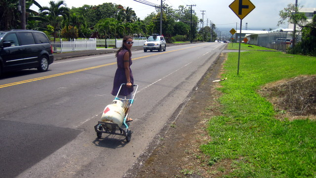 Cécile et la bouteille enchantée En NZ, alors que nous tentions de faire remplir nos bouteilles françaises, le monsieur nous avait posé la question à mille balles et nous, naïvement, on avait demandé où l'on pouvait faire certifier notre bouteille. A l'endroit indiqué, un autre monsieur nous avait dit qu'il ne pouvait certifier notre bouteille parce qu'elle n'était pas 'standard'. Ben tiens ! Désespérés, nous avions alors invoqué l'impossibilité de remplir notre bouteille et donc l'imminence de notre trépas (et celui de nos enfants) sans cuisine à bord. Sans se démonter, le préposé nous avait donné la solution: acheter une nouvelle bouteille. Bon sang mais c'est bien sûr ! Voilà comment nous contribuons à l'économie de chaque pays que nous traversons: nous achetons une bouteille remplie et certifiée.
Cette fois, nous espérions nous en sortir car les bouteilles kiwi ressemblent à s'y méprendre aux bouteilles US. Hélas, encore raté. Le jeune homme a jeté un coup d'oeil à la bouteille et la phrase est tombée, sans appel: votre bouteille n'est pas certifiée. Ici, comme on est aux US, ils ajoutent généralement:"Vous comprenez? C'est pour votre sécurité". C'est incroyable le nombre de choses que je ne peux pas faire pour ma propre sécurité... Pour le coup, je n'ai même pas argumenté. J'ai sorti mon portefeuille, ce qui a immédiatement conduit mon interlocuteur aux meilleures dispositions, et nous sommes revenus à bord avec nos 2 bouteilles. Avec le recul, le seul endroit où nous avons pu remplir une bouteille non locale, ce fut aux îles Cook... |
||||||||||||||||||||
|
14 avril 2013 - Week end chez Mauricio et Paola En cette fin de semaine, nous étions invités chez Mauricio et Paola, un couple de réfugiés péruviens qui ont fait fortune dans le trafic d'ananas. Arrivé à Hawaii il y a 14 ans pour travailler comme skipper, Mauricio n'a jamais quitté l'île et a même réussi à obtenir un permis de résidence permanent, pour lui, sa femme et ses 2 enfants.
Nous les avions rencontrés dès notre arrivée, lorsque nous interrogions les bateaux au mouillage en quête de renseignements utiles. Ils sont sur le départ pour la Polynésie française et nous avons troqués nos expériences respectives. Pour complèter notre petit groupe, Mauricio et Paola avaient également invité Dan et Sylvie, un couple de Canadiens fort sympathiques qui sont sur le point de s'installer sur l'île après un (bref) séjour dans le Pacifique à bord de leur voilier.
Leur maison est située au sommet du Kilauea, à 1100m d'altitude. Il y règne une atmosphère chaleureuse grâce à l'usage intensif du bois pour la construction. La nuit, la température descend en-dessous des 20°C, il fait franchement froid. On a donc passé une soirée tranquille au coin du feu...
La maison est louée à partir de ce lundi, pour une durée d'un an, pendant que ses propriétaires découvriront les Tuamotu. Afin de plaire au futur locataire, elle est équipée de tout le confort moderne, y compris d'un jacuzzi en terrasse, ce qui a beaucoup plu aux enfants, et d'un écran plat de 2m de diagonale, ce qui aussi beaucoup plu aux enfants (et davantage encore aux papas).
Nous avons profité de cette réunion internationale pour organiser un repas 'cuisine du monde': Ceviche de poisson, Poutine et Chicons au gratin. (C'est vrai, j'ai trouvé des vrais chicons au magasin, même qu'ici ça s'appelle des "Belgian Endives"). Ceux qui se demandent ce qu'est le Ceviche, c'est du poisson cru, et la poutine, ce n'est pas une tranche de président à vie en Russie mais bien un plat typique canadien, composé de frites, saupoudrées de fromage et nappées de jus de viande. Le dimanche matin, nous avons trouvé un caméléon qui gambadait sur la route. Nous l'avons arrêté et, comme il n'avait pas de papiers, Syr Daria l'a gardé pendant quelques heures avec elle pour l'interroger avant de le relâcher à regret (j'ai formellement interdit la présence d'animaux domestiques à bord, aussi longtemps que je vivrai). |
||||||||||||||||||||
|
14 avril 2013 - Les jardins botaniques de Hawaii Coincé entre la gare et le vieux port, euh non, coincé entre la route et l'océan, le jardin s'étend sur 2 hectares de terre fertile au relief tourmenté.
On y trouve des cascades, des passerelles, des étangs et, évidemment, un nombre surprenant de plantes tropicales croissant dans ce qui semble être une pagaille sauvage mais qui se révèle en fait être un désordre bien controlé.
Ici, la nature est réellement vigoureuse et il faut toute l'adresse des jardiniers pour conserver à chaque essence son petit espace de vie. On y trouve une grande variété de palmiers et des arbres gigantesques aussi bien que des arbustes aux fleurs colorées.
Et que dire des orchidées semi-sauvages. Il y en a à foison, de toutes les couleurs, poussant en sous-bois, sur l'écorce même des arbres du voyageurs ou des eucalyptus. C'est vraiment extraordinaire.
La promenade dure quelques heures et démarre par une pente raide, un peu comme si vous étiez au sommet de la première partie d'une montagne russe géante. Vous dévalez la falaise à grandes enjambées pour arriver sur le faux plat verdoyant en petites foulées avant de trotter sur l'allée qui borde le rivage. La particularité de cet environnement végétal hors du temps réside peut-être dans le fait qu'il vous englobe littéralement de tous les côtés, y compris par-dessus.
|
||||||||||||||||||||
|
13 avril 2013 - On a marché sur la lune Avec notre 4x4 de bourgeois, nous sommes les rois de l'île (et tous les autres aussi puisqu'ils ont tous un 4x4). Nous pouvons aller où bon nous semble, par exemple au sommet du Mauna Kea, à 4.200m d'altitude.
C'est ce que nous avons fait. Vers 17h, nous avons entamé l'ascension, avec l'intention d'assister au coucher de soleil par-dessus les nuages.
Comme prévu, vers 3.000m d'altitude, nous avons émergé d'une mer de nuage, dans un décors franchement lunaire. D'ailleurs, je pense que c'est ici qu'ils ont fait les fausses photos de l'alunissage d'Apollo dans les années 60...
En haut, non seulement il fait froid (c'est normal me direz-vous, mais nous ne sommes pas habitués et surtout, le contraste thermique avec la plage est saisissant) mais l'air se fait rare.
Malgré ma constitution exceptionnelle, j'étais essouflé et un peu étourdi, sans doute proche de ma limite verticale. Mais de là-haut, avec tous les touristes japonais venus en autobus 4x4 (si, si, ça existe), nous avons assisté à un coucher de soleil inoubliable, presque surnaturel. |
||||||||||||||||||||
|
10 avril 2013 - Parade, terrain et lave Alors que je travaillais d'arrache-pied à embellir notre bateau (si, si, c'est possible), la sonnerie du téléphone retentit et une petite voix flûtée teintée d'un accent espagnol me dit (je traduis pour ceux qui n'apprécient guère la langue de Shakespeare à la sauce Cervantès): "La parade annuelle d'Hilo a lieu aujourd'hui, vous devriez y aller, c'est sympa !!!".
Nous avons enfourché notre annexe en direction du port et rejoint la cohorte de citoyens oisifs, alignés le long de la chaussée, à attendre le long cortège, un peu comme à la St V mais en moins trash. Quoique. Les canassons ne se sont pas privés pour répandre des saletés sur le bitume. Heureusement, après chaque cavalerie, se présentait une petite poubelle à roulettes destinée à charrier les déjections équines. Bref, on s'est bien amusé à regarder défiler tout ce que Hawaii compte comme clubs, amicales, congrégations, sectes, groupes, écoles et autres fanfares. Même la police a défilé. C'était fantastique...
Ayant assisté à ce spectacle étourdissant, nous avons mis le cap sur les pentes du volcan, où nous attendait une propriété magnifique au coût fort modeste. La terre est effectivement bon marché par ici et nous sommes tentés d'acheter un petit lopin, histoire de faire les fiers durant les soirées mondaines auxquelles nous participons assidûment, comme chacun sait. Une propriété sur un volcan en activité, ça jette !
En plus, l'endroit ne manque pas de charme, même s'il faut un peu d'imagination pour visualiser la lave. Il faut dire que ce versant n'a pas été liquide depuis plus de 300 ans, d'après l'agence (et la végétation semble confirmer cette assertion). On a bien inspecté le terrain et si d'aventure nous nous en portons acquéreurs, nous ne manquerons pas de vous tenir informés.
Encore guillerets de cette exploration, nous sommes descendus vers la mer. Nous caressions le projet de nous rendre au bord de l'actuelle coulée de lave afin d'en voir, en vrai (de la lave brûlante). Hélas, rien n'y fit. L'arnaque est pourtant bien ficelée puisqu'au centre d'information on nous avait garanti que la lave coulait à flots au bout du chemin. Ce qu'ils ne nous avaient pas dit c'est que ledit chemin était barré après 500m et qu'il était interdit de poursuivre sous peine d'amende (et de carbonisation). Curieusement, les tours opérateurs offrent des visites pédestres sur le même chemin, moyennant finance, évidemment. Les 150$ par personne qu'ils demandent doivent servir à payer les amendes. Mais comment font-ils pour l'incinération? |
||||||||||||||||||||
|
3 avril 2013 - 14 ans Après 4 ans, voici 14 ans. Sur Let It Be, on n'est pas bon en arithmétique mais on assume. En ce beau mercredi de Pâques, nous célébrions les 14 ans de notre première née Kenya, alias Vasco de la Cruz Arellano y Montoya (c'est elle qui le dit...).
Soucieux du bien-être de chacun et du mien en particulier, j'ai développé au cours du voyage un penchant certain pour l'hédonisme. Tel Epicure, j'estime que la satisfaction des besoins naturels et nécessaires, à commencer par l'appétit, est un moyen d'atteindre le plaisir. Cette éthique, que je m'efforce de suivre dans ma vie quotidienne en préparant des repas savoureux, sains et équilibrés, a également imprégné mes enfants depuis leur plus tendre enfance. Si bien qu'aujourd'hui, j'en récolte les fruits, non seulement lorsque je regarde mon corps aux proportions parfaites dans le miroir, mais également lorsque je demande à mes enfants leur souhait culinaire à l'occasion de leur anniversaire. Cette année, Kenya m'a demandé des nachos comme chez Reva. Pour ceux qui l'ignorent, ce monument de la gastronomie mexicaine consiste à faire un tas de chips au mais, saupoudré de fromage industriel et de sauce tomate artificielle avec quelques piments. On enfourne alors le tout quelques minutes, histoire de faire fondre le fromage et de former ainsi un bloc compact et gluant. Pour finir, on essaie de servir ce truc dans des assiettes avec du fromage blanc et de la guacamole (de l'avocat en purée). C'est un délice. J'ai vraiment réussi mon éducation...
En cette occasion festive, Cécile a elle aussi contribué à la gastronomie mondiale, mais pour de vrai. Elle a mis les petits plats dans les grands pour concocter une demi-forêt noire, la crème lui faisant défaut à la moitié du processus. De mémoire d'Eric, plus savoureux gâteau ne fut oncques servi à bord... Grâce à ces ripailles trop grasses ou sucrées pour être réellement épicuriennes, nous avons tous pris 2 kg, ce qui n'est pas dramatique pour nos enfants mais qui commence à poser un problème à l'athlète que je fus jadis (à moins qu'il n'existe des concours de sumo pour quinquagénaires ?).
Avant d'éclater pour de bon, nous avons quand même pu offrir de nombreux cadeaux à Kenya: des programmes éducatifs pour sa PSP (tel GTA-Vice City), un Tiki hawaiien et, bien sûr, des boucles d'oreille en plumes de Néné (pas de grivoiseries, c'est l'oiseau emblème de l'archipel). |
||||||||||||||||||||
|
31 mars 2013 - 4 ans Eh oui, c'est à peine croyable. Il y a 4 ans, jour pour jour, nous partions pour 2 ans de voyage à travers le Pacifique. Il m'est venu une idée grotesque: où était-on il y a un an? Et une année auparavant? Bref, j'ai fait un petit retour en arrière et, après avoir fouillé nos archives, j'ai mis la main sur quelques photos intéressantes.
Après 12 mois de voyage, nous étions aux Tuamotu, après avoir passé le canal de Panama, visité les Galapagos, traversé le Pacifique (enfin, la moitié) et parcouru les Gambier et les Marquises. A cette époque, nous étions jeunes et confiants, un peu pressés car le voyage approchait de son terme mais nous pouvions désormais évoluer dans le bateau sans nous cogner au bimini, sans rater la traîtreuse marche de la cuisine ni glisser sur les jupes arrière. On a quand même bien profité de ces îles paradisiaques qui nous tendaient leurs cocotiers.
12 mois plus tard, nous étions en Nouvelle Zélande, après avoir visité les Cook, Niue, les Tonga et les Fidji. En arrivant en NZ, on n'avait plus du tout l'intention de s'arrêter en si bon chemin. On a mis les enfants à l'école pendant un an, Eric est retourné en Belgique pour refaire la caisse de bord et Cécile n'a rien fait, comme d'habitude.
Hélas, la vie chez les Kiwis ne nous a pas convaincus. Mais la perspective de retrouver le stress, la pluie et l'absence d'avenir en Belgique nous a incités à poursuivre notre périple. Nous avons néanmoins fait un bref retour en Belgique, pour la première fois en 3 ans, pour saluer les amis et la famille et, accessoirement, pour vendre notre maison. Sur le chemin du retour en NZ, nous avons envisagé l'Australie qui nous a plu mais qui ne voulait pas de nous. Nous avons alors décidé de mettre le cap à l'ouest.
Eh bien non ! Contre toute attente, en 2012, on a rebroussé chemin, vers l'est et la Polynésie française. Après 4 ans de voyage, nous sommes maintenant à Hawaii, après avoir parcouru près de 20.000 nautiques... On connaît Let It Be par ses moindres soupirs, que ce soit en traversée ou au mouillage, nous faisons désormais corps avec notre navire.
Et pourtant, on pense à s'arrêter car les enfants commencent à se sentir à l'étroit dans notre bateau et je commence à réparer des trucs que j'avais déjà réparés il y a 4 ans... On fera le point au Mexique, d'ici 6 mois. On verra si l'on arrive à briser l'anathème qui nous lie à Let It Be. Ce qui est certain, c'est que les enfants grandissent. Si, si! Non seulement Kenya est presqu'aussi grande que sa mère mais, à trois, ils pèsent dorénavant plus que moi... En plus, ils se permettent maintenant de nous répondre, voire d'être en désaccord et d'argumenter. Quel toupet! |
||||||||||||||||||||
|
28 mars 2013 - Petites contrariétés Comme le temps passe, voilà près d'un mois que nous sommes en territoire américain. Nous prenons nos marques, toujours dans la baie de Reeds à Hilo, toujours à attendre les cours des enfants. On en profite pour faire du shopping: une nouvelle protection de cockpit (l'ancienne n'étant plus imperméable, la nouvelle non plus, d'ailleurs, mais pas par vieillissement prématuré, simplement du fait du travail mal réalisé par la couturière, alors que j'ai déboursé 300$, djeu), des nouvelles jumelles car les précédentes, étanches et garanties 10 ans, sont quand même remplies de buée, une nouvelle PSP pour Syr Daria, la sienne ayant pris l'eau lors de la traversée des 40èmes, et, évidemment, de manière plus prosaïque, de la nouvelle nourriture, car celle d'avant est digérée depuis longtemps.
Je l'ai déjà précisé, Hilo est au vent de l'île et, à ce titre, bien arrosé. De fait, nous avons observé le cycle: le matin, il fait calme et ensoleillé, les nuages stagnant au pied du volcan. En cours de journée, les thermiques prennent naissance (donc du vent qui vient de la mer et pousse les nuages vers le sommet du volcan) et provoquent généralement quelques ondées en fin de journée. On en profite pour remplir nos batteries d'électricité le matin et nos réservoirs d'eau l'après-midi. Le lendemain, on recommence. A ce petit jeu, impossible d'apercevoir le sommet du Mauna Kea depuis le bateau.
A ce sujet, nous essayons de trouver un moyen d'accéder au sommet du Mauna Kea (et son observatoire astronomique de renommée mondiale). Pourquoi 'essayons'? Parce que les voitures de location sont interdites d'ascension et que les tour operators demandent 200$ par tête de pipe pour assister au coucher de soleil à 4200m d'altitude. Pour l'instant, on échafaude les plans les plus machiavéliques: monter à pieds, lever le pouce, voler un 4x4, créer notre propre agence de voyage... C'est d'autant plus triste que le sommet enneigé du volcan bénéficie de plus de 320 nuits claires par an... Pour ceux qui s'interrogent, les télescopes Keck sont les plus grands du monde, en terme de taille de miroir: 10m de diamètre, assez pour sonder les tréfonds de l'univers. |
||||||||||||||||||||
|
22 mars 2013 - Promenade à Hilo La baie de Hilo, on remarque la pente douce du volcan, en arrière plan Beaucoup se demandent à quoi ressemble Hilo. Je les comprends. Certes, les volcans sont impressionnants et je les ai décrits et illustrés abondamment dans les billets précédents, mais à quoi ressemblent les villes? Voilà une question intéressante.
Justement, nous étions hier, Cécile et moi, en promenade à Hilo, dans l'espoir de ravitailler le bateau et le trio d'enfants affamés qui y séjournaient. Malgré nos suppliques, ils avaient préféré jouer à Rome, total war et regarder What Happens in Las Vegas plutôt que de s'aérer avec nous.
Il y a environ 2 km de marche le long du rivage, entre le point d'appontage du dinghy et le centre ville. Nous avons mis à profit la ballade pour photographier les magnifiques arbres qui bordent l'artère cotière.
Voilà, c'est joli hein? Et reposant... |
||||||||||||||||||||
|
19 mars 2013 - Dans la baie de Reeds Après 8 jours de bons et loyaux services, nous avons dû rendre sa liberté à notre Nissan Altima 2.5L. Nous l'avons libérée dans le parking de Hertz, où elle a rejoint ses congénères. Privés de moyen de locomotion à roulettes, nous sommes maintenant contraints à utiliser nos pieds, ce qui n'est pas sans rappeler le reste du voyage, à l'exception notable de la Nlle Zélande.
Nous avons décidé de quitter le non accueillant port de Radio Bay et ses barbelés qui nous faisaient un peu trop penser à 1984 et pas assez au pays de la liberté. Nous avons rejoint l'ensemble des voiliers de l'île, soit, au total, 25 rebelles qui osent affronter l'ordre établi et adopter un mode de vie différent de leurs compatriotes (apparemment, nous sommes le seul voilier de voyage).
En quittant le port, nous avons croisé une lionne de mer qui nageait très sereinement autour des installations, sans prêter attention à l'attroupement qu'elle créait. Même les membres de la sécurité ne savaient trop que faire, partagés entre leur devoir de vérifier chaque entrée et sortie dans le port et l'interdiction absolue d'approcher les représentants de cette espèce en voie de disparition, à moins d'être dûment accrédité. Impossible de vérifier les intentions de la lionne. Surtout que son gros ventre laissait supposer un accouchement imminent. A moins qu'il ne s'agisse de terroristes déguisés en phoque pour introduire une bombe dans l'enceinte sécurisée ... Cruel dilemme ! Pour finir, la lionne a quitté les lieux de son propre chef, au grand soulagement de tous.
Reeds Bay est située à 800m du port. Nous n'avons pas navigué bien longtemps pour rejoindre cet abri, dans lequel nous mouillons maintenant par 3m de fond. A peine arrivés, nous avons été salués par une petite tortue marine (à moins que ce ne soit un robot téléguidé de la marine américaine pour s'assurer que nous ne transportons pas de matériel illicite). Nous sommes maintenant prêts à attendre quelques semaines. C'est le temps qu'il faudra pour que l'EAD ré-envoie les cours des enfants. En effet, ils ont déjà été envoyés alors que nous étions en route mais les autorités, ne nous 'connaissant' pas, ont tout simplement décidé de détruire le courrier qui nous était destiné alors que d'une part je les avais informés de l'arrivée de papiers à notre intention et que, d'autre part, les documents étaient estampillés 'Eric LARUEL - Visiting Yacht LET IT BE'. Cette fois, ils nous ont promis de conserver les documents. Maintenant que nous sommes potes...
Bref, on est au mouillage, en bout de piste, ce qui nous permet d'assister à l'atterrissage des quadrimoteurs à hélices de l'armée. Heureusement, l'aéroport est plutôt calme. En outre, nous sommes maintenant à un jet de pierre du centre ville où nous pouvons nous rendre en dinghy/marche en moins de 45 minutes, ce qui rend l'avitaillement possible. Nous allons regarder les paquebots entrer et sortir du port en attendant les cours. Il faut dire que Hilo est une plaque tournante du tourisme paquebotal de l'archipel. Ils se succèdent quotidiennement au quai...
Autre activité en vogue en ce moment sur Let It Be: la nausée. En quittant les Marquises, nous avons décidé d'acheter un remède contre la filariose, à ingérer dès la sortie de la zone de danger. En Polynésie, les moustiques peuvent être porteurs de vers microscopiques qui se développent dans le système sanguin et peuvent finir par boucher les vaisseaux, provoquant toute sorte d'inconvénients, comme une mort atroce et douloureuse, par exemple. Le médecin nous avait prévenu: non seulement les pilules sont grosses et difficiles à avaler, ce qui nous a valu un spectacle étourdissant, intitulé: "Kenya et la pilule maudite", mais le principe actif provoque diarrhée et nausée. De fait, l'un après l'autre, nous avons failli mourir baignant dans notre vomi, pour ne pas dire plus. Heureusement, à part Cécile qui gît dans sa cabine à l'heure où j'écris ces lignes, nous avons tous recouvré la santé, bien débarrassés de ces ignobles vers venus d'un autre monde. |
||||||||||||||||||||
|
14 mars 2013 - Retour à Kilauea Iki Après une interruption momentanée des visites pour cause de pluie tropicale, le show a repris son cours.
Lors de notre dernière escapade, nous avions pu observer le cratère fumant du Kilauea, seul volcan en activité sur l'île. Nous avions également repéré une rando fort intéressante dans Kilauea Iki que nous n'avions pu entreprendre, faute de temps et d'équipement. En effet, il s'agit de traverser le cratère du 'petit' Kilauea, situé à quelques centaines de mètres de son grand frère en activité.
Sa dernière manifestation magmatique remonte à 1959, année au cours de laquelle un geyser de lave de 500m de haut avait inondé la cuvette pendant 37 jours d'affilée. Après cet accès de mauvaise humeur, le Kilauea s'en était retourné dans les bras de Morphée, laissant un lac de lave en fusion qui s'est refroidie lentement en formant une surface plane et dure sur laquelle on peut marcher.
La randonnée de 6km nous entraîne dans une boucle qui part des falaises à la végétation tropicale pour traverser ensuite le cratère et revenir au point de départ. Au début, on marche dans les fougères arborescentes, puis l'on descend vers le centre de la terre avant d'entamer l'excursion minérale sur le magma durci. Ca et là, on peut sauter par-dessus des crevasses où la couche de lave supérieure s'est brisée, un peu comme dans les films catastrophe où les autoroutes se craquèlent et sont comme propulsées par d'invisibles forces venues des enfers.
C'est vraiment impressionnant, surtout que, par endroit, les fissures laissent encore échapper de la vapeur surchauffée, issue du contact entre les eaux pluviales qui percolent et le magma non encore refroidi dans les entrailles du volcan. Pour peu, on sentirait le sol trembler...
La lave a mis près de 40 ans pour refroidir et être marchable. Malgré l'hostilité des lieux, les plantes s'immiscent peu à peu dans les replis humides, attirées sans doute par les nutriments prodigués par Vulcain. A ce sujet, je ne résiste pas au plaisir de poser LA question que tout le monde attend: "De quoi est faite la lave?"
Un peu plus loin, la route précédente a été recouverte par la coulée de 1974, ou celle de 1965, je ne sais plus. Mais ce qui est sûr, c'est qu'à nouveau, on s'est cru dans un film. Les coulées de lave ont partiellement recouvert l'asphalte, tout en laissant quelques zones intactes, comme pour nous rappeler la précarité et l'insignifiance de nos ouvrages.
Seul bémol dans cette somptueuse symphonie: le parcours en boucle peut se poursuivre dans les deux sens, chose impensable pour des voyageurs ayant fréquenté la Nlle Zélande et, comble de l'amateurisme, il n'y a pas une seule toilette sur le parcours. Gageons que ces petites lacunes seront comblées sous peu, moyennant une augmentation des droits de visite et du nombre d'interdictions sur le panneau à l'entrée. Au fait, la lave est composée de 50% de silice (du sable). Il y a aussi du fer, du magnésium, de l'aluminium et des tas d'autres trucs en moindre quantité. |
||||||||||||||||||||
|
12 mars 2013 - Mauna Loa, Mauna Kea et Kilauea Forêt de palmiers Hawaii (aussi appelée Big Island) est la dernière née des îles d'Hawaii. Elle n'a que 800.000 ans et certains de ses volcans sont encore en activité, tel le Kilauea, ou en sommeil feint, tel le Mauna Loa dont la dernière éruption remonte à 1984, ou assoupis, tel le Mauna Kea.
Nous avons décidé de visiter le cratère du Kilauea, à 1000m d'altitude, car il est en activité permanente depuis des années. Jadis, le volcan s'élevait tel une cathédrale mais, vers le 15ème siècle, le sommet s'est affaissé dans un gigantesque tonnerre (les chants folkloriques Hawaiiens en témoignent). Depuis, les éruptions se succèdent et les tonnes de lave se déversent par les fissures du volcan en couches successives. Certaines coulées vont même se jeter dans l'océan tout proche. L'ensemble est pratiquement plat.
Enfin, quand je dis 'plat', c'est relatif puisque l'île repose sur un fond marin à 5000m de profondeur, ce qui en fait une montagne de 9000m de dénivelé.
Au nord, l'activité volcanique a cessé depuis longtemps et la végétation luxuriante a recouvert les failles gigantesques qui se sont creusées dans la roche volcanique. Les vagues de l'océan écument de rage au pied des falaises verticales qui encadrent les vallées encaissées. C'est saisissant.
Autre particularité de l'île: à Hilo, où nous sommes amarrés à l'est de l'île, il pleut en moyenne 4m d'eau par an tandis qu'à Kona, sur la côte ouest de la même île, il ne pleut que 25cm par an. Résultat: à l'est des forêts tropicales et des chutes d'eau spectaculaires, à l'ouest une espèce de toundra désertique et de frêles arbustes qui parsèment la lave solidifiée. |
||||||||||||||||||||
|
9 mars 2013 - Les choses sérieuses commencent Comme nous ne sommes pas venus à Hawai que pour les formalités d'entrée et l'humour subtil des douaniers américains, nous avons loué une voiture et décidé de faire le tour de l'île, dans le sens anti-horlogique, pour ceux que la science intéresse.
Partis de Hilo à la fine pointe de l'aube, il n'a pas fallu attendre longtemps pour que nous tombions sur LA chute d'eau de l'archipel (c'est curieux cette facilité avec laquelle nous trouvons les chutes d'eau impressionnantes, quelle que soit notre destination). Comme d'habitude, on s'est fait un petit trekking dans la jungle avant de tomber sur un paysage grandiose, fracassé par une cascade bruyante.
Vous vous en doutez, il en faut plus pour nous impressionner. Quelques km plus loin, la route s'arrête brusquement sur un panneau: "4x4 only". De fait, après le panneau en question, la route prend des allures de montagnes russes que les loueurs de voitures refusent de cautionner. On s'est arrêtés sur le parking prévu à cet effet et on a regardé la vallée qui s'étalait sous nos yeux. Il paraît que c'est l'un des rares endroits où les natifs ont gardé leur mode de vie ancestral et qu'à ce titre, il ne faut pas les déranger en essayant de pénétrer plus avant dans ce territoire secret (mais rempli de 4x4 quand même, les natifs en question n'ayant pas fait preuve de sectarisme quant aux moyens de locomotion).
Poursuivant notre route, nous sommes arrivés sur la côte ouest de l'île. Le contraste est vraiment saisissant. Autant le côté au vent est vert et humide, autant son copain d'en face est aride, voire désertique. Entre les deux trône un volcan énorme appelé le Mauna Kea. Le volcan est, paraît-il, inactif pour le moment mais nous avons quand même roulé pendant quelques kilomètres au sein d'une ancienne coulée de lave. La route rectiligne semble posée sur un océan noir et brillant, dont on peut encore apercevoir les vagues figées, temporairement sans doute, par quelque force surnaturelle. Le trajet est singulier et les paysages taillés à la serpe ne demandent qu'à reprendre vie.
C'est sur ce volcan que sont installés les fameux observatoires astronomique d'Hawaii. Nous avons gravi les sommets enneigés du volcan (et, pour une fois, c'est exact, nous avons vu de la neige au sommet sans pouvoir y accéder car d'une part la température devenait franchement polaire et, d'autre part, notre voiture de location était véhiculo non grato sur la fin de l'ascension) en traversant des paysages désertiques aux accents lunaires. A ce sujet, si vous regardez bien la photo ci-dessus, vous verrez que contrairement à une idée reçue, les volcans en question sont presque plats. La pente est douce et vous emmène lentement, presque imperceptiblement, jusqu'à 4200m d'altitude. |
||||||||||||||||||||
|
6 mars 2013 - The Land of the Free Voilà 3 jours que nous sommes à Hawaii, 50ème état des Etats-Unis, et, à ce titre, soumis aux mêmes lois absurdes, supposées protéger les citoyens américains des vilains terroristes. A titre d'exemple, le port de Hilo, qui est le seul port d'entrée de l'île et, en conséquence, un lieu de passage obligatoire pour les voiliers en visite, est une zone sensible: la présence de grands paquebots, cibles bien connues des poseurs de bombe sans vergogne, a généré la création d'un périmètre de sécurité infranchissable. En d'autres termes, les autorités ont construit une grande barrière entourant le port et s'étirant le long du quai. Cette initiative géniale restreint toutefois nos mouvements puisque nous pouvons certes sauter du voilier sur le quai mais nous ne pouvons ensuite pas le quitter, si ce n'est pour retourner sur le voilier... Heureusement, il y a une porte mais que nous ne pouvons franchir que sous escorte. Pour ce faire, il suffit d'appeler la sécurité, ce qui ne peut se faire que par téléphone. Evidemment, nous n'avons pas de téléphone puisque celui de Polynésie ne fonctionne pas ici. Le pays de la liberté.
Au début, nous avions de bonnes raisons de déranger les autorités: il fallait payer le port et remplir les formalités de douanes, d'immigration et de santé. Ces services sont situés dans l'enceinte du port et requièrent donc un droit de passage. Les cerbères de service se sont pliés à leur devoir d'escorte, certes de mauvaise grâce mais de grâce quand même. Quand nos projets se sont révélés moins officiels, la sécurité nous a fait comprendre que le convoyage des voilistes ne faisait pas partie de leurs priorités (évidemment, ils sont très occupés par des touristes plus 'rentables' déversés par centaines des paquebots géants qui se succèdent dans le port). Bref, terminées les escortes, pour sortir du port, nous étions priés de prendre notre dinghy, d'aller à la plage et de nous débrouiller ensuite (c'est-à-dire de contourner le périmètre de sécurité autour du port, soit 20 minutes de marche au lieu de 30 secondes). Nous comprenons maintenant pourquoi il n'y a aucun voilier dans le port. Le pays de la liberté. Autre surprise: l'achat d'alcool. Au supermarché, où le demi gallon de rhum coûte 15$, nous avions conçu le plan audacieux de réapprovisionner Let It Be. Arrivés à la caisse, une pancarte indiquait que toute personne ayant l'air d'avoir moins de 40 ans devait présenter son Id pour prouver qu'il était plus vieux que 21 ans (âge à partir duquel on peut acheter de l'alcool). Cécile a conservé une jeunesse éclatante certes mais de là à avoir moins de 21 ans, seule une caissière trop zélée pouvait en douter. Eh bien, pas de chance, c'est sur celle-là que nous sommes tombés. Cécile a sorti sa carte d'identité mais, manque de pot, elle est périmée depuis le moins d'août 2012. Et rien n'y fit: Cécile eut beau arguer du fait que sa carte soit périmée ne changeait rien à sa date de naissance, la madame ne voulait rien entendre. Arrivé sur ces entrefaits, je toisai la dame en lui demandant si j'avais, moi aussi, l'air d'avoir moins de 40 ans. "Oui", me dit-elle. "Appelez votre supérieur", répondis-je. "Il est là", me dit-elle. J'interrogeai le monsieur: "Ai-je l'air d'avoir moins de 40 ans? Oui, oui", me dit-il. Suspectant quelque entente illicite, je me tournai vers les consommateurs qui faisaient la file derrière nous: "Ai-je l'air d'avoir moins de 40 ans? Non", confirmèrent-ils en riant. Mais cela ne changea rien: nous avons dû laisser l'alcool aux caisses. Le pays de la liberté. |
||||||||||||||||||||
|
3 mars 2013 - Hilo Enfin! Après 13 jours de mer, nous sommes arrivés à Hilo, Hawaii. Sur les 2100 nm de traversée, nous avons navigué 2100 nm au près, bâbord amure, sans changer le moindre réglage de voile. Les 6 derniers jours, nous avons eu droit à 25 noeuds de vent, ce qui nous a obligé à réduire considérablement les voiles pour ne pas arriver le week end et déranger les préposés à l'immigration durant leur sommeil dominical. Quoi qu'il en soit, même avec cette modération salutaire, on a battu notre record de vitesse avec 6.7 noeuds de moyenne sur une distance équivalente à une transatlantique... Au passage, on a même gratté un chalutier japonais qui filait à 8 noeuds tandis que, dans un moment d'égarement, nous étions à plus de 9 noeuds. C'est curieux d'ailleurs car nous étions persuadés d'être seuls au monde (en tous cas dans ces environs) lorsque nous avons aperçu le chalutier dernier cri qui hoquetait sur les flôts. Nous nous sommes croisés à moins de 100m tout en étant à plus de 1000 nautiques de la terre la plus proche. Surréaliste.
Tout cela ne nous a pas empêché d'arriver en territoire américain en ce premier lundi de mars. Notre arrivée triomphale est passée inaperçue malgré nos appels répétés à la VHF au capitaine du port. C'est bien simple, suspectant une avarie de radio, nous avons contacté l'énorme paquebot qui trônait dans le port, lequel nous répondit poliment ce qui nous conduit à conclure que les douanes se souciaient peu de nous. De fait, nous sommes arrivés dans le port, absolument désert, et nous avons amarré Let It Be au quai. Il n'y avait aucun autre bateau en vue et, cachés par une muraille de containers, nous craignions de ne jamais pouvoir mettre pied à terre. Nous avons attendu l'arrivée des officiels, conformément aux usages. Après 30 minutes, le quai était toujours désert, pas le moindre douanier en vue... Normalement, nous sommes supposés rester à bord jusqu'à l'arrivée des officiels, lesquels arrivent en général assez rapidement. Ici, rien. Pas un signe.
J'envisageais maintenant de sauter sur le quai, prêt à risquer ma vie pour entrer aux USA, quand un jeune homme apparut. Il n'était pas douanier, certes, mais était affecté à la sécurité des installations portuaires et, à ce titre, un rien suspicieux à l'idée de voir arriver un voilier dans le port. Je lui expliquai que nous venions d'arriver et que nous avions plein de passeports, de visas et autres documents officiels à faire tamponner mais que l'absence d'officiels accrédités nous laissait dans l'embarras. Sûr de lui, le jeune homme empoigna son walkie-talkie pour informer la hiérarchie de sa trouvaille: un navire suspect est arrivé au port, que faut-il faire? La réponse tomba comme un couperet: il faut prévenir les douanes (ce que nous essayions de faire depuis un moment). Peine perdue: les douanes étaient en heure de table. C'est donc quelques heures plus tard que nous avons pu entamer les formalités d'entrée. Curieusement, le douanier était assez sympathique. Apparamment, à Hawaii, ils n'ont pas encore bien assimilé le grand risque que font courir les étrangers au bien-être des américains. |
||||||||||||||||||||
|
22 février 2013 - Equateur Aujourd'hui, à 15h, nous avons franchi l'équateur. Après un séjour de près de 4 ans dans l'hémisphère sud, nous allons maintenant écumer le Pacifique Nord, n'ayant laissé que ruines et désolation sur notre passage au Sud. On va commencer par Hawaii, pour venger la mort du capitaine Cook, massacré par les insulaires cannibales alors qu'il venait leur apporter la paix et la civilisation. Bande d'ingrats.
En plus, j'ai bien nettoyé les coques avant notre départ. Résultat: 196 miles en 24h (notre record) et près de 855 miles en 5 jours. Il ne nous en reste que 1200 à parcourir (soit, au total, près de 4000 km quand même) et nous sommes rendus. Avant de quitter les Marquises, nous avions consulté les prévisions météo qui étaient claires: vents d'est mollissant vers le nord, front humide et vents de 20 à 25 noeuds NE à partir du 6-7ème degré N puis gentil travers dans les alizés vers Hawaii. On était prévenu: après avoir traversé gentiment la ZIC (le poteau noir, autour de l'équateur), nous devions rentrer dans le dur. De fait, c'est ça qui est bien en voilier, non seulement on sait grâce à la météo mais on le voit venir: vers 6°N, une grande barre sombre à l'horizon nous promettait de grandes réjouissances. On a donc eu le temps de prendre les ris bien à l'avance et de se préparer au grand secouage. En quelques minutes, le vent est monté à 35 noeuds avant de s'établir autour de 25 noeuds NE, soit un près bon plein. Alexis, que je salue au passage, a beau vanter la quiétude des traversées où l'on médite en regardant la mer et en écoutant Jack Jonhson (moi, je préfère JJ Cale, mais bon, on va pas ergoter), pour le coup, on s'est contenté de se cramponner en attendant que ça passe et on n'est pas sorti du carré pendant 48h, à l'exception des visites techniques. En effet, au petit matin, alors qu'il continuait à pleuvoir et que les vagues frappaient les coques à grand fracas, nous avons constaté qu'un des cordages de pied de mât s'était insidieusement glissé au travers du trampoline et enroulé pernicieusement autour de l'hélice bâbord (du moins, en première analyse puisque le bout en question refusait de revenir sur le pont malgré la traction puissante que j'opérais à son extrêmité). On s'est mis à la cape dans une houle de 3m, toujours avec 25 noeuds de vent, et j'ai plongé dans la grande bleue pour m'occuper du bout. Il était effectivement enroulé autour de l'hélice et il m'a fallu un peu d'adresse pour le libérer en prenant grand soin de ne pas m'écraser contre la coque suite aux mouvements de houle. Heureusement, l'eau était chaude ... Autre grand plaisir des traversées au près par grand vent: le bruit et les mouvements imprévisibles du cata. Pour dormir, c'est un vrai défi. Mais rien ne sert de se plaindre: comme je le dis toujours, quand on est fatigué, on dort. Sauf que dans les cabines, les mouvements saccadés du bateau entraînent le dormeur dans des micro-sauts en apesanteur que le cerveau interprète malgré le sommeil. Résultat: dans les rêves, on effectue des bonds de quelques mètres, ce qui serait agréable, voire glorieux, si l'on pouvait en contrôler l'amplitude, le déclenchement et la trajectoire. C'est très frustrant et l'on se réveille fatigué de tant de gambades oniriques. |